🎨 LA COPA ETERNA: SANGRE Y POTRERO — Galería de Arte AAA
Colección Renacimiento Sfumato (Estilo Mona Lisa / Da Vinci) + Arte Conceptual Street-Ink y Atlas Vectorial
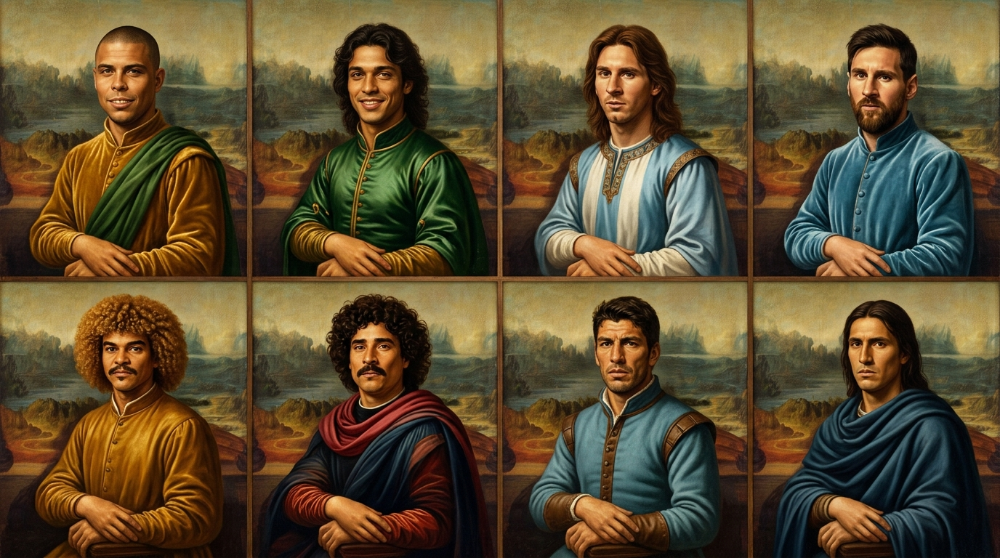
🖼️ [RENACIMIENTO SFUMATO] Roster Wave 1 — Primeras 8 Leyendas (4x2)
Retratos al óleo estilo Mona Lisa: O Fenômeno, O Bruxo, El Cañón, La Pulga, El Pibe, El Loco, El Pistolero y El Matador en túnicas renacentistas de terciopelo y seda.
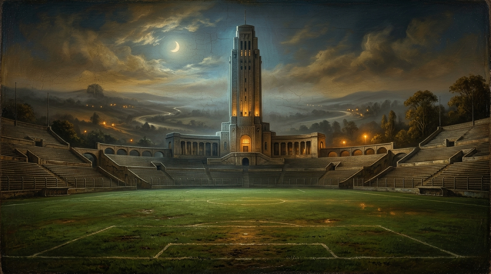
🏛️ [RENACIMIENTO SFUMATO] Escenario 2.5D — Monumento Centenario (Uruguay)
La Torre de los Homenajes de 1930 bajo luz celeste lunar, terrazas de piedra clásica y reflejos ámbar sobre el césped húmedo en sfumato nocturno.
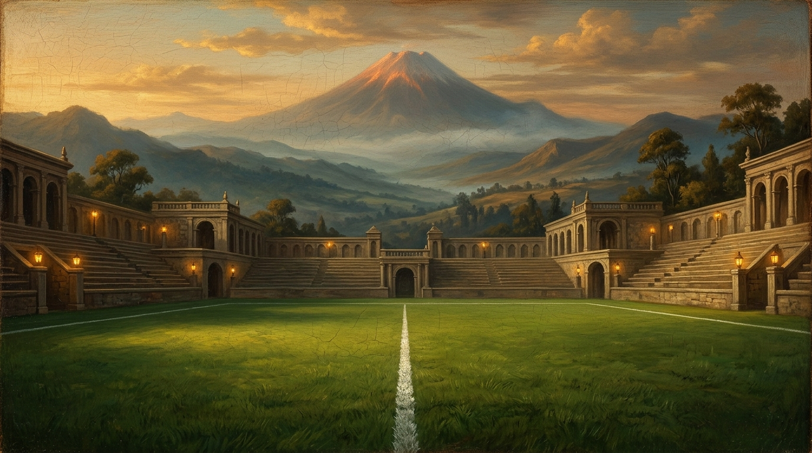
🌋 [RENACIMIENTO SFUMATO] Escenario 2.5D — El Volcán de Quito (Ecuador)
Estadio de altura sobre la línea ecuatorial al anochecer con faroles dorados y volcán andino con resplandor de brasas en perspectiva aérea.
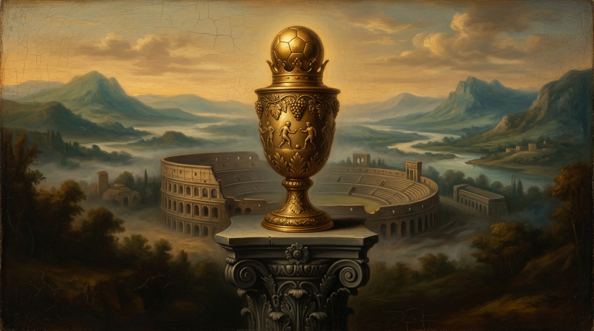
🏆 [RENACIMIENTO SFUMATO] Trofeo Oficial — La Copa Eterna
Bodegón al óleo estilo Mona Lisa con craquelado fino sobre tabla de álamo: cáliz dorado grabado sobre pedestal de piedra frente a un anfiteatro y montañas brumosas.
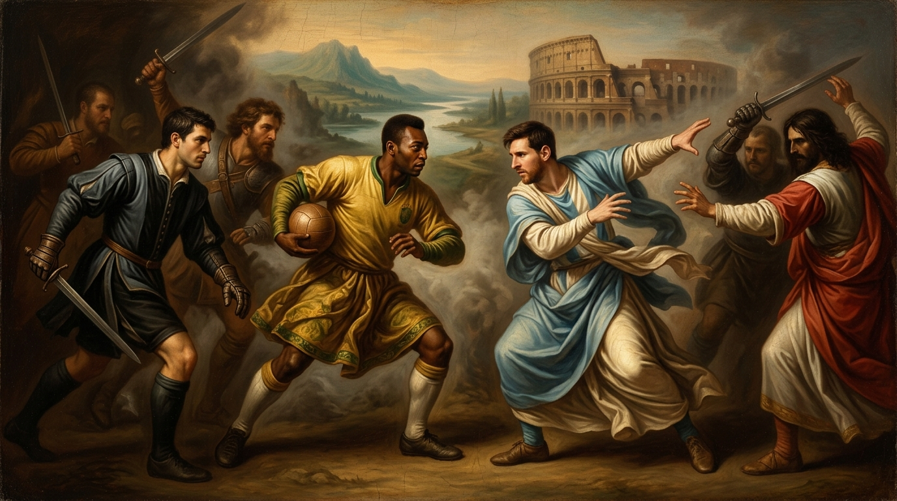
🖼️ [RENACIMIENTO SFUMATO] Key Art Oficial — Choque de Leyendas
Pintura al óleo en claroscuro dorado y sfumato: guerreros futboleros sudamericanos en túnicas renacentistas frente a un valle fluvial y coliseo al atardecer.
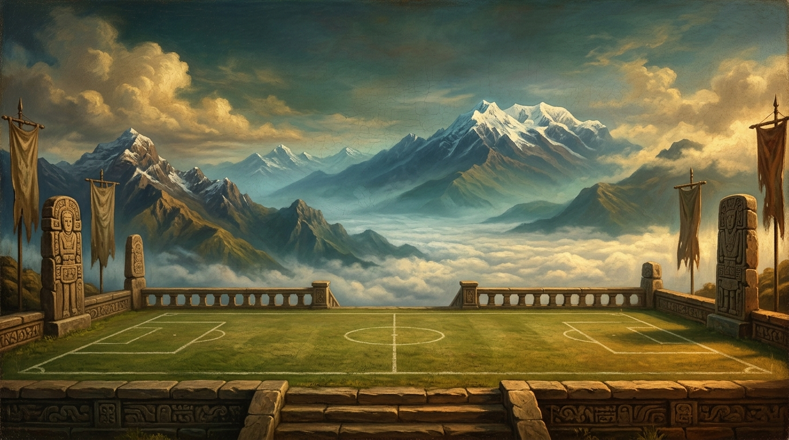
🏔️ [RENACIMIENTO SFUMATO] Escenario 2.5D — El Nido del Cóndor 3600m (Bolivia)
Cancha andina suspendida sobre un mar de nubes doradas en perspectiva aérea de Leonardo, flanqueada por monolitos tallados y picos nevados del Illimani.

🖼️ [RENACIMIENTO SFUMATO] Pantalla Oficial VS — Superclásico Brasil vs Argentina
O Fenômeno vs La Pulga pintados al óleo sobre tabla de álamo con técnica sfumato, iluminación chiaroscuro dorada y paisaje brumoso de estadio renacentista.
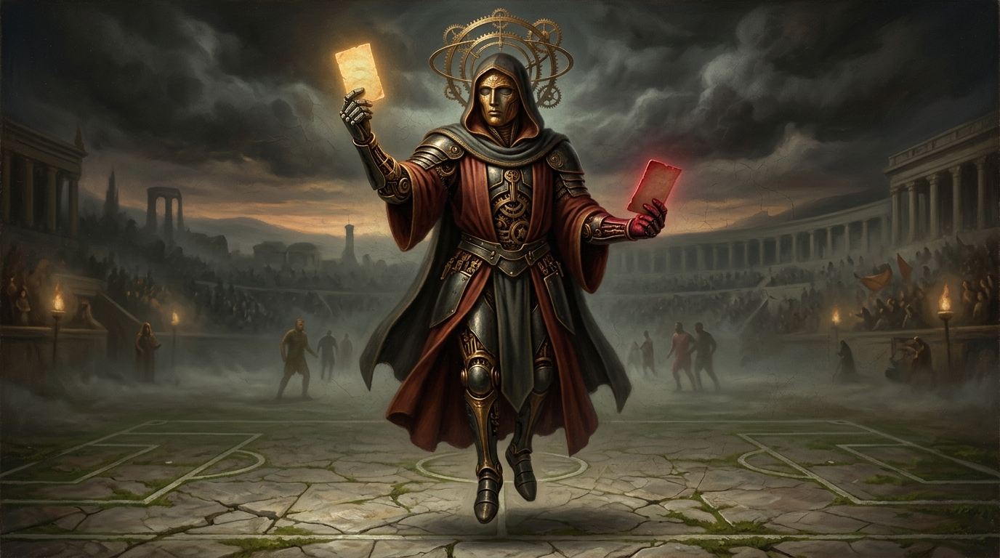
🖼️ [RENACIMIENTO SFUMATO] Jefe Final — Juez Supremo (V.A.R.-ZERO)
Óleo sobre tabla de álamo al estilo Mona Lisa / Códice de Da Vinci: árbitro biomecánico en bronce y obsidiana con halo astrolabio y tarjetas de juicio en claroscuro dorado.
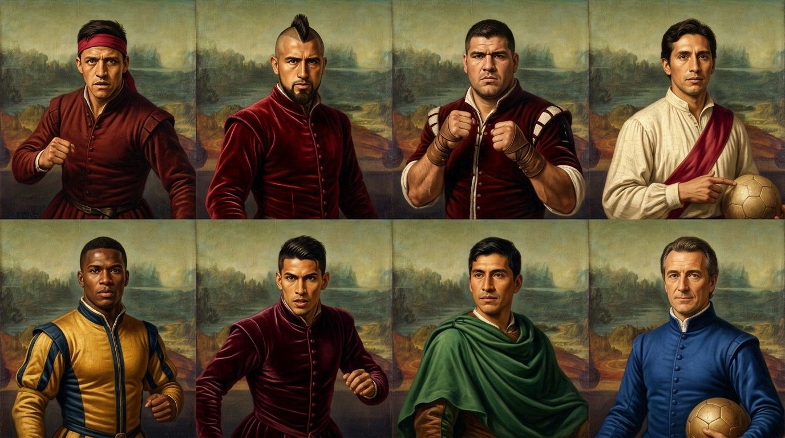
🖼️ [RENACIMIENTO SFUMATO] Roster Wave 2 — Retratos de Leyendas (4x2)
8 retratos de tres cuartos con técnica sfumato, barniz envejecido y craquelado: Bam-Bam, El Rey, El Bulldog, El Maestro, El Tren Amazónico, El Huracán Vinotinto, El Diablo Andino y Le Général.
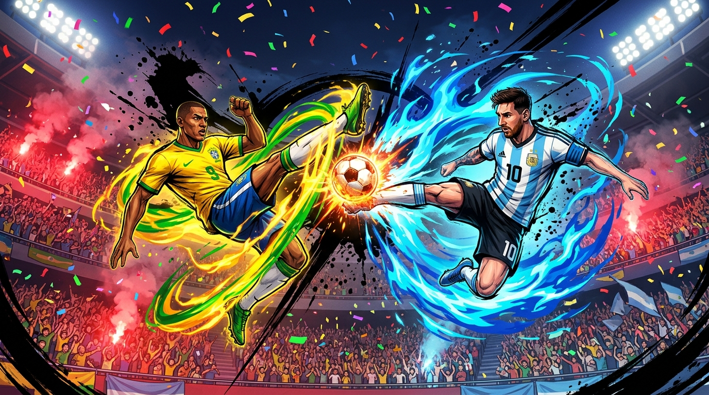
1. Key Art Oficial — Superclásico de las Américas
Estética Street-Ink PBR: Chilena dorada con cintas de samba vs. Cañonazo supersónico de fuego celeste en estadio nocturno.
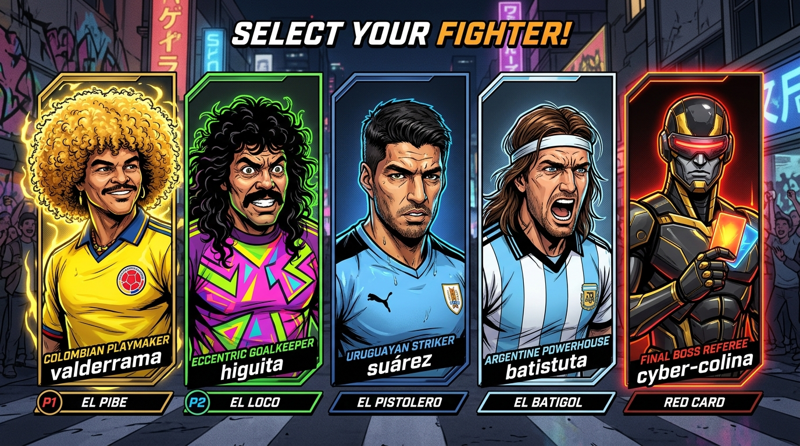
2. Lámina de Selección de Leyendas CONMEBOL
Retratos estilizados con Rim Light competitivo: El Pibe, El Loco, El Pistolero, El Batigol y El Juez Supremo (V.A.R. - ZERO).

3. Escenario 2.5D — Templo do Maracanã / La Bombonera
Cancha nocturna iluminada desde cámara lateral 2.5D con vallas LED destructibles (Wall Break), bengalas y lluvia de papelitos.
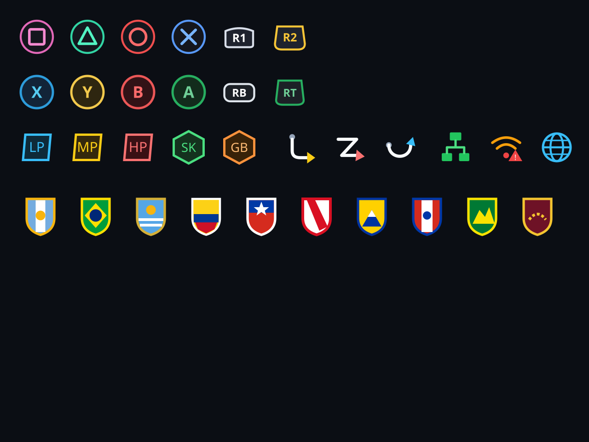
4. Atlas Vectorial SVG — Glifos CommonUI & Escudos CONMEBOL
Glifos PS5 DualSense, Xbox Series X|S, botones FGC (LP/MP/HP/SK/GB), comandos Numpad y los 10 escudos sudamericanos.